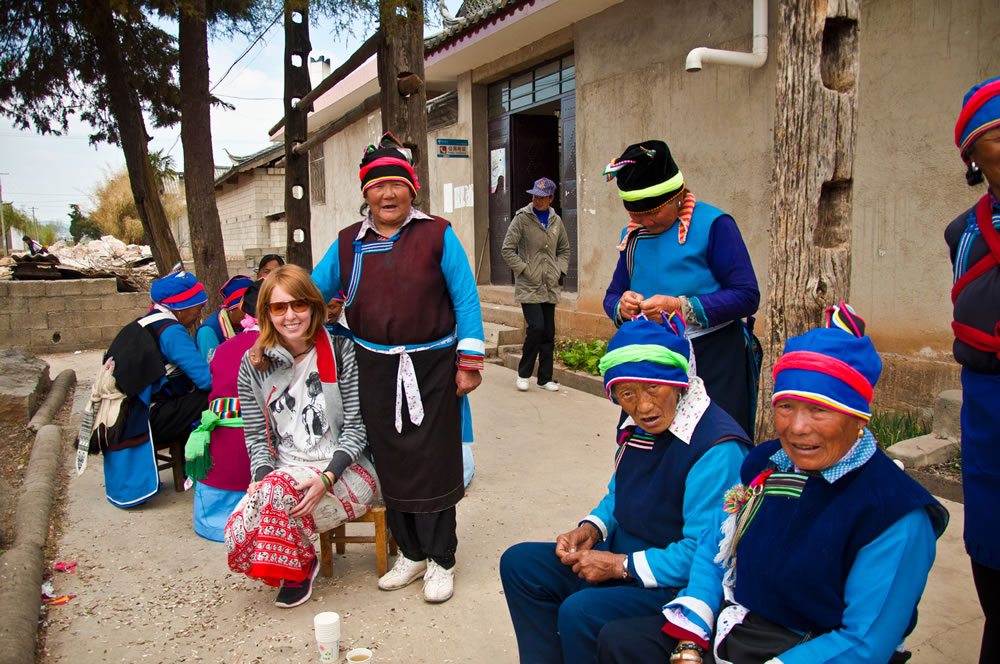

An Interview with Aniko Villalba of the Viajando Por Ahí Travel Blog and Books
Aniko Villalba is an Argentinean-Hungarian author and true citizen of the world. She has spent the last decade traveling the world and sharing her experiences as the author of three books and the Viajando Por Ahi Blog.
I had an opportunity to meet Aniko in Düsseldorf, Germany, where she gave a presentation at trivago about her life and career as a digital nomad.
After the presentation, I was invited to join her and a small group to dinner. We got to talking and I became deeply captivated by the rest of her story and candor. In a world full of dreamers, she fits right in, but she is not afraid to tell it like it is and shed a light on the often-neglected harshness of life. Aniko did me the honor of agreeing to an interview with me. The following text is that interview.
What was the moment when everything changed? When you went from being who you were before, to being the global traveler that you are today?
Aniko Villalba - **I don’t know when that happened… Maybe when I was lost somewhere in China! I think everything changed when I published my first book, in 2013, and people started physically sharing my stories. I’ve heard many times: “I gave your book as a present to someone who wanted to travel”, or “I exchanged your book at a hostel” or “I saw someone reading your book on the subway this morning”… Once I even met by chance a girl in the airport bus in Barcelona who was reading my book! These things astonish me, I feel they are reading someone else, not me! But my books are everything to me and it makes me happy to know that they **inspire others to follow their dreams.
What does “slow travel” mean to you, and why is it your preferred pace of travel?
Aniko Villalba - **For me slow travel is not really about the speed of the trip, it’s more about how you look at a place, how you relate to it, what things you choose to do (and not to do) there. I like to compare it to a visit to a museum: if you go inside a big famous museum (let’s say the Louvre) you will probably feel the urge to see “everything”, to go from room to room, to see each and every painting and, of course, to take a picture of the Mona Lisa (because how could you not do it?). But what if instead of trying to see everything you just focus your time on enjoying three or four of your favorite paintings? Or maybe even just one. That’s slow travel for me: the urge to do all kinds of stuff and the fear of missing out will always be there, but I prefer to just see and do what really interests me, **even if it means going to Paris and not seeing the Eiffel Tower, or if it means staying one month in the same location.

To other would-be travelers out there, what advice do you give for how to get started?
Aniko Villalba - **I think there’s never an ideal time to start, especially if your dream is to be a long-term traveler or a digital nomad, you will never have the time or the money you think you need (even less, both at the same time), so **you just have to start. Take a small step and do it. In my case, I bought a one-way bus ticket from Buenos Aires to Bolivia and that’s how I started. I had no idea how I was going to finance my trips, where I would sleep during the following months and what places I would visit. But once you start, things slowly fall into place. So I would say: don’t try to have everything solved before you leave. It’s impossible and it will be an excuse to never leave your home.
Additional reading: Why Travel While Young?
You describe yourself as an introvert. Does that make traveling the world more difficult, or make you more observant and appreciative of your experiences?
Aniko Villalba - **I like to say that everyone should travel as their personality tells them to. **There is no “ideal traveler personality.” In my case, travel has helped me to be a lot more open to strangers, to ask for help when I need it, to trust people I don’t know and to listen to my guts. Maybe being an introvert makes me more observant, and it also makes me enjoy solo travel a lot. However, I also love to meet new people and be social, but I just need to disconnect and wind down once in awhile, maybe for a longer time than other people. I love to spend time journaling, wandering, and sitting in public spaces by myself, watching the life around me.
> > > [A post shared by Aniko Villalba (@anikovillalba)](https://www.instagram.com/p/BOplZQBh5G6/) on Dec 30, 2016 at 9:31am PST >
Being independent does not mean going it alone. Who most influenced you in your pursuit of traveling the world? How?
**Aniko Villalba - **When I started dreaming about traveling the world, there were almost no travel blogs (or at least I didn’t find them in 2007) or “real people” that I could relate to. So the ones who influenced me were some well-known travel writers and photographers, such as Paul Theroux, Martín Caparros (an Argentinian writer) and Steve McCurry. I was lucky enough to interview McCurry for a magazine I was working at the time and it was very inspiring to meet the person who took some of the most beautiful pictures I had ever seen. I will always remember what he said when I asked him how he was able to take such natural and intimate pictures of the people in Asia: “People just invite me into their homes. You will see.” And he was right.
Additional Reading: Relationships - A Nomad’s Philosophy
I have thought a lot about what “empowerment” is and have come to believe it is a combination of three things: ability, permission, and desire. Do you agree or disagree? And how have your experiences shaped this view?
Aniko Villalba - **I agree, and as I said when we met, I think that to be empowered you need to be conscious of the power that you have. When I traveled to Iceland with one of my best friends we decided to play a game of challenges, and one of the missions we had was to go all around the island by hitchhiking. So we stood by the side of the road, we extended our thumbs and five minutes later we had three cars waiting in line to take us. After 20 days of being picked up with only a few seconds of wait, we felt super powerful, because we knew **we could get anywhere we wanted only by asking the people to take us.
> > > [A post shared by Aniko Villalba (@anikovillalba)](https://www.instagram.com/p/BRrTpHfgcZa/) on Mar 15, 2017 at 4:08pm PDT >
What obstacles have you faced as a solo woman traveler around the world? How have you overcome them?
Aniko Villalba - **As a solo traveler **I’ve had a lot more positive than negative experiences while traveling. People usually think it’s the opposite, they get scared when I say I will travel alone somewhere, but for me, it’s always been very rewarding. I’ve been able to meet a lot of women around the world (women who, when they saw me traveling with a man didn’t come close to us, and when they saw me alone immediately wanted to chat with me about my life and my country). I think the main disadvantage I see is that sometimes I stop from doing everything I’d like to do or from going anywhere I’d like to go. Other than that, I’ve always been treated with respect.
Your second book, El síndrome de París (The Paris Syndrome), focused on the harsh realities of living a nomadic lifestyle. What have those realities taught you about yourself?
*Aniko Villalba - **That I don’t want to live as a nomad forever. A few days ago I wrote a blog post titled “I’m tired of traveling” (Spanish*) in which I opened up to my readers and told them that I don’t want to travel anymore (at least for now) and that my dream right now is to find a house in France and settle down here with my husband. I want to have my own space, my desk, my bookshelf, a group of friends, daily activities and routines. I think that traveling became so much a part of my routine that I stopped enjoying it as before. So, for now, I decided it’s best to stop and focus on my writing, on my future online courses and on other creative projects that I have going on. And when I feel like it, I will travel again.
What does “home” mean to you?
Aniko Villalba - **It’s a hard one. This is the question I’ve been asking myself for a few years now. Before I thought “home” was the place where I was born, but now I think **home is the place where I feel good and where I’m near the people I love. For the next few years, I think I will have two homes: France and Argentina.
By now, you must be well-acquainted with the human condition. What about humanity gives you the most hope for the future?
Aniko Villalba - **That everywhere I go, people are hospitable and kind. Everyone is just trying to live as happily as possible, in spite of the particular situation of each country, **people just want to be happy. The bad news is a very small part of what really goes on in the world.
Thank you, Aniko!
It was such an honor for me to get to know Aniko and for her to do this interview with me. I hope that all you readers out there have enjoyed getting to know her a little bit as well! Please leave Aniko and me a comment below with your thoughts, inspirations, and personal story.
Some additional resources to check out:
I hope that you have enjoyed learning about Aniko and her nomadic adventures around the world. If you would like to learn more from Aniko, then I invite you to listen to the audio below. This is from trivago’s Beyond Borders Podcast, which Aniko recorded while she was in Dusseldorf.